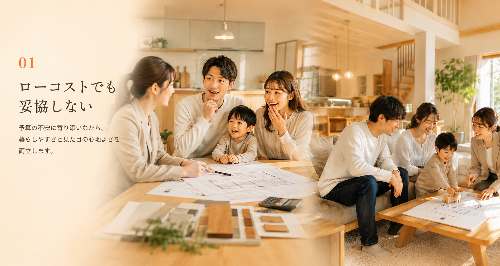
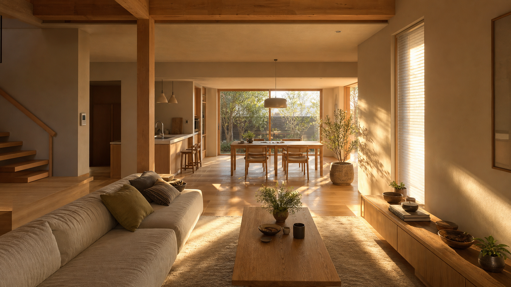
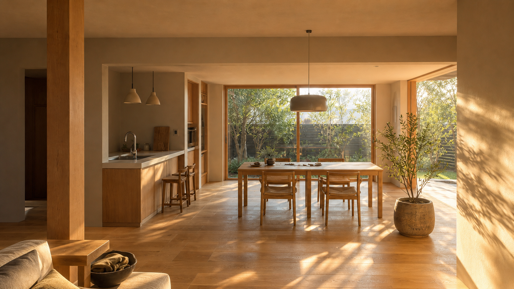
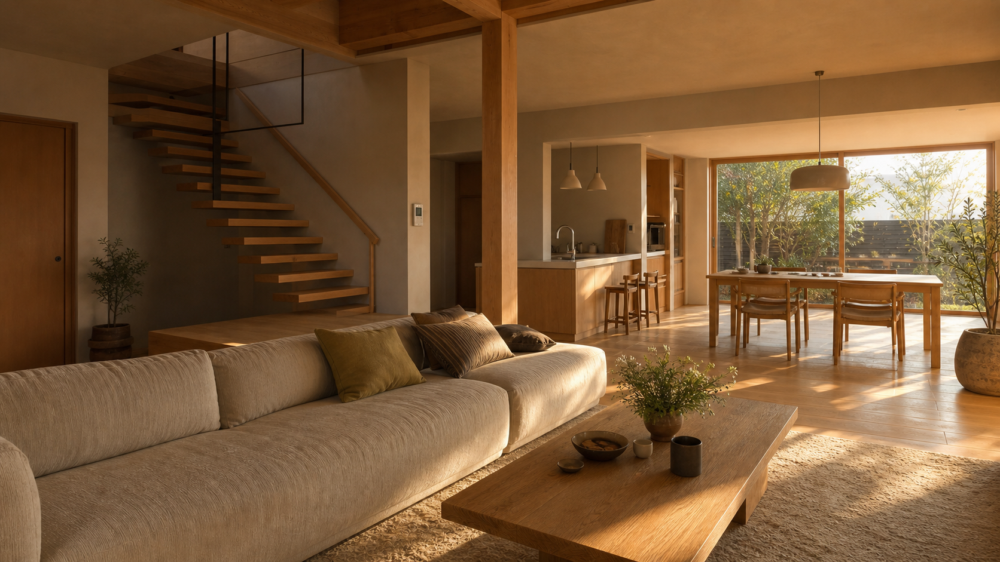
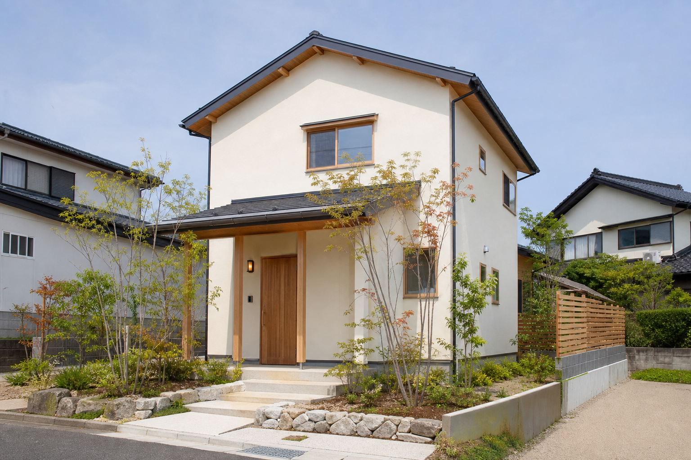
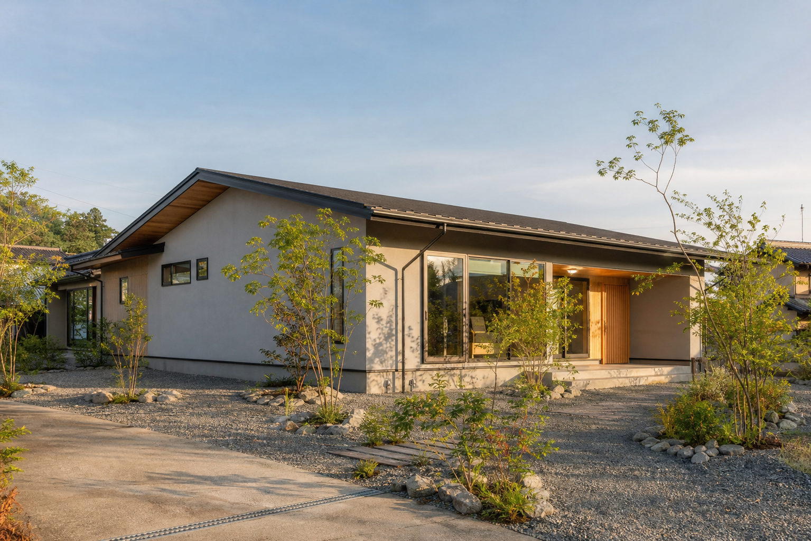
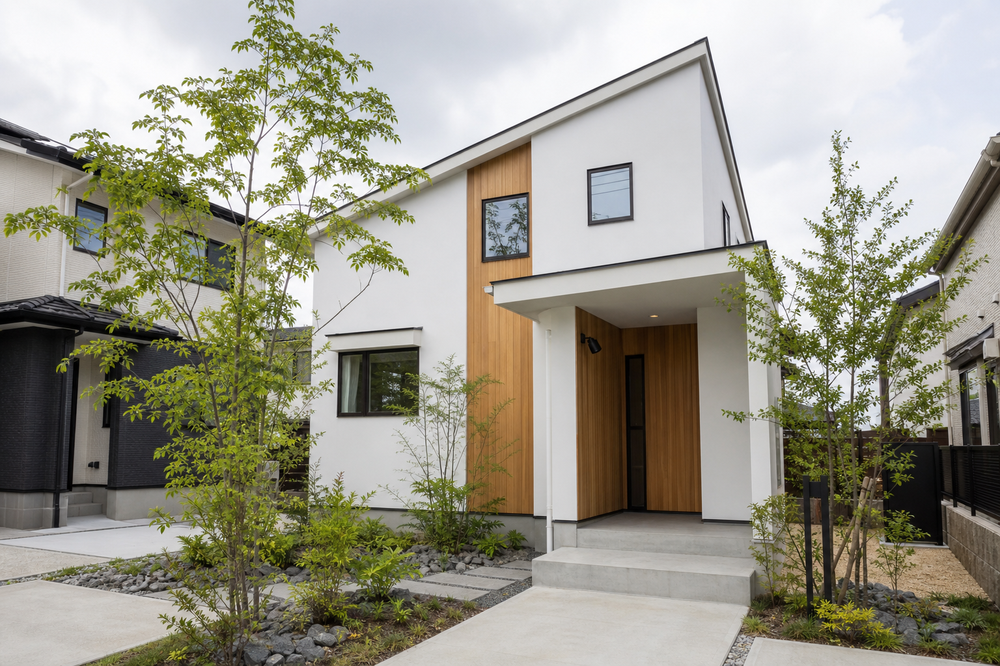
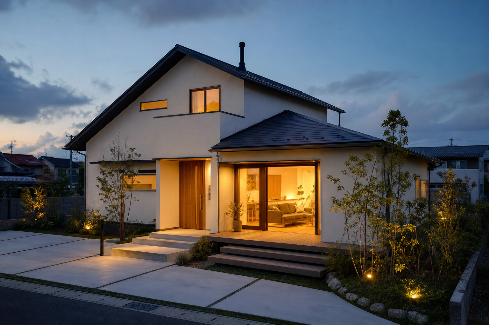

家づくりに、希望の光を。
Strength
TMK homeの強み
Service
暮らしに合わせて、
選べる家づくり。
はじめての相談から具体的な住まいの計画まで、安心して進められるよう丁寧にサポートします。
新築住宅
家族構成や土地条件に合わせた、無理のない新築計画。
デザイン住宅
木目、光、余白を活かした、親しみやすく洗練された住まい。
住宅相談
費用、間取り、エリア、進め方まで、最初の一歩から相談できます。
Area
対応エリア
地域の暮らし方や気候に寄り添い、家族が安心して過ごせる住まいづくりをお手伝いします。
南東北
Southern Tohoku
三重県近郊
Mie and nearby
Works
暮らしの数だけ、
住まいの答えがある。
家族の理想と土地の個性を丁寧に読み解いた、TMK homeの施工イメージです。

01
光と木を迎える家
自然素材の温もりと、明るい動線を大切にした住まい。

02
庭とつながる平屋
深い軒の下で、内と外の時間をゆるやかにつなぐ家。

03
余白を楽しむ家
白い壁と木の表情が、端正な暮らしを引き立てます。

04
灯りに帰る家
夕暮れの家族を、やさしい光で迎える安心の住まい。